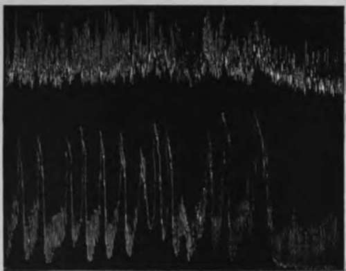

2. Results In Man
Description
This section is from the book "The Control Of Hunger In Health And Disease", by Anton Julius Carlson. Also available from Amazon: The Control of Hunger in Health and Disease.
2. Results In Man
Local Contractions And Peristalsis
When the esophagus balloon is distended with a pressure of 2 to 4 cm. chloroform the esophagus usually exhibits rapid continuous contractions. These contractions are at times quite regular both in rate and amplitude. The total time of each contraction is less than 2 seconds.
In addition to these contractions the esophagus may show contractions of a tonic character. The duration of these contractions varies from a few seconds to several minutes. If these tonus contractions are only moderately strong, the rapid contractions, just mentioned, continue and are superimposed on the former. In some cases the tonus contractions are. quite regular in rate and intensity, but this is exceptional.
Both types of contractions appear to be local. They are not related to esophageal peristalsis, although a peristalsis (caused by swallowing) may induce them in a quiescent esophagus. They are not related to gastric contractions, for they occur when the empty stomach is quiescent. They may also occur during gastric hunger contractions, but in this case there is no synchrony between the gastric and the esophageal contractions. They are local contractions of the esophageal tube and not peristaltic, because they do not move the distended balloon. But occasional peristaltic contractions of local origin appear during these contractions. This is shown by the pull on the tube if this is fixed to the teeth, or by the downward movement of the tube if it is not fixed. In this way the esophagus balloon is worked through the cardia unless the tube is secured to the teeth. This peristalsis is obviously identical with the "secondary esophageal peristalsis" of Meltzer.
These esophageal contractions do not give rise to hunger and arc in no way associated with this sensation. The rapid contractions do not affect consciousness, but more prolonged tonic contractions are felt if they are strong or moderately strong. They are felt, not as hunger pangs, but as a fulness in the chest or throat, as of something having stuck in the throat. This sensation is so characteristic and distinct that there is no possibility of confusing it with hunger pangs of gastric origin.
These contractions are caused by the local mechanical stimulation of the distended balloon. The contractions are more marked the greater the pressure in the balloon, but at times they appear even with a balloon pressure of less than i cm. chloroform. They are most marked immediately after the introduction and distension of the balloon, but they may persist during an entire observation period of 4 to 5 hours if the balloon pressure is above 1 to 2 cm. chloroform. We did not observe any decrease in these local contractions during the progress of the experiments, as one might have expected in case there was any appreciable "education" of the esophagus to the pressure of the balloon. Evidently the esophagus mechanisms are so adjusted that local mechanical stimulation causes local contractions interspersed with occasional peristalsis until the stimulus is removed, that is, the material forced into the stomach. The local contractions as well as the secondary peristalsis may be reflexes via the medulla, as indicated by Meltzer's observations. But the absence of the contractions after section of the vagi does not prove it, at least for the part of the esophagus provided with non-striated musculature and myenteric plexus. It is known that this part of the esophagus responds to local stimulation with local contractions and peristalsis after recovery from the temporary hypo tonicity following section of both vagi.
These local contractions of the esophagus were evidently not encountered by Cannon and Washburn, although the only difference between our technique and theirs is the additional balloon in the stomach (and, in consequence, two rubber tubes in the esophagus). Is the local excitability of the esophagus increased by the presence of a distended balloon in the stomach, a rubber tube in the cardia, and a second rubber tube in the esophagus and mouth ? All the men used in our experiments showed these contractions. Can it be the esophagus of Mr. Washburn is exceptional ? Or did Cannon and Washburn have the esophagus balloon actually located in the cardia, so that their tracings record the behavior of the cardia rather than that of the esophagus proper ?
Boldyreff pointed out that the balloon method cannot be used for recording the periodic contractions of the empty intestines, for the reason that the distended balloon causes local contractions through mechanical stimulation. Fortunately this is not true for the gastric fundus, but it is true for the esophagus, at least to an extent to impair greatly the efficacy of balloon method. For when the esophagus balloon is distended sufficiently to register the slightest tonus variations and contractions of the esophagus, the local contractions are most prominent and disturbing.
Contractions Synchronous With The Gastric Hunger Contractions
The weaker gastric hunger contractions at the beginning of a hunger period are usually not accompanied by any esophageal contractions. But synchronous with the strong hunger contractions that mark the culmination of a gastric hunger period there is some persistent increase in the tonus of the esophagus and brief contractions simultaneously with the individual stomach contractions. This increased tonus and rhythmic contractions of the esophagus parallel with the hunger activity of the stomach are in evidence even when the esophagus exhibits the rapid local contractions described above. The esophagus contractions appear to lag behind the gastric contractions and are as a rule of briefer duration. The frequent culmination of the gastric hunger contractions in a period of incomplete tetanus of varying durations seems to have no parallel in the esophagus in the way of strong and prolonged contractions.
Fig. 13.-Simultaneous records from the stomach (lower curve) and the lower fourth of the esophagus (upper curve) of A. J. C. during the culmination of a period of vigorous gastric hunger contractions. Lower end of esophageal balloon = 16 cm. from incisor teeth, that is, at the cardia. Pressure in balloon = 3 cm. chloroform. Showing weak esophageal contractions synchronous with the gastric hunger contractions. One-half original size.
Continue to:
- prev: III. The Esophagus And The Cardia In Hunger. 1. Methods Of Investigation
- Table of Contents
- next: 2. Results In Man. Continued